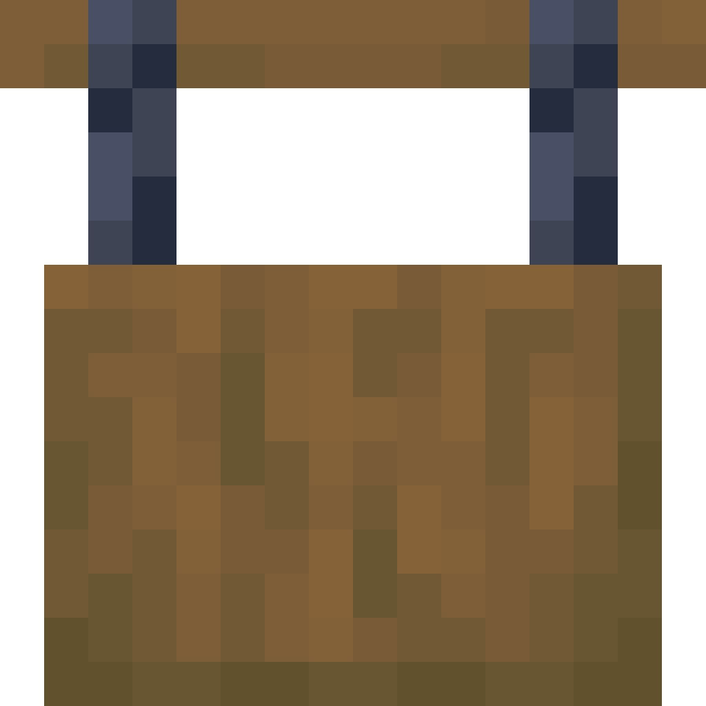
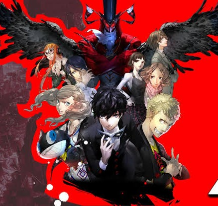

Persona 5 est un jeu développé par Atlus, se déroulant à Tokyo.
Vous y incarnez Joker, un lycéen injustement condamné
qui fonde les Voleurs Fantômes avec d'autres adolescents marginalisés.

Persona 5 est un jeu de rôle japonais (JRPG)
emblématique développé par Atlus mêlant simulation de vie lycéenne
à Tokyo et exploration de donjons surnaturels.
Persona 5 est un jeu de rôle japonais développé par Atlus dans lequel vous incarnez un lycéen injustement condamné qui emménage à Tokyo pour sa probation.
Avec l'aide d'autres adolescents marginalisés, il découvre une application mobile permettant d'accéder au Métavers, un monde parallèle façonné par les désirs corrompus des adultes.
Sous le nom de code Joker, il fonde les Voleurs Fantômes afin d'infiltrer des palais mentaux, voler les cœurs pervertis des criminels influents et les forcer à avouer leurs méfaits dans le monde réel.
Le jeu alterne ainsi entre une simulation de vie quotidienne rythmant le calendrier scolaire et des combats dynamiques au tour par tour où vous capturez et fusionnez des entités appelées Personae, le tout sublimé par une direction artistique rouge et noire ultra-stylisée et une bande-son acid-jazz mémorable.